宗子 (sorshi@dcc-jpl.com) / DCC-JPL Japan / foltia Project.
http://www.dcc-jpl.com/soft/foltia/
文書最終更新日:$LastChangedDate$
文書リビジョン:$Rev$
このドキュメントの最新版はこちらです:http://svn.dcc-jpl.com/foltia/trunk/doc/index.html
foltiaは主にアニメを効率良く失敗なく録画するために開発された、Linux上で動く録画システムです。
番組名と放映局を指定しておけばあとはなにもせずに毎回録画されます。しょぼいカレンダーというアニメ番組表サイトと強く連係することで、野球中継で時間がずれても毎回期待通り録画されます。
外部オプションを取り付けることで外付けチューナのコントロールも実現します。
録画した番組は自動的にMPEG4に変換され、iPodに自動転送することが可能です。PSPに転送して視聴することも可能です。
全ての主要操作はWebベースでコントロールされます。
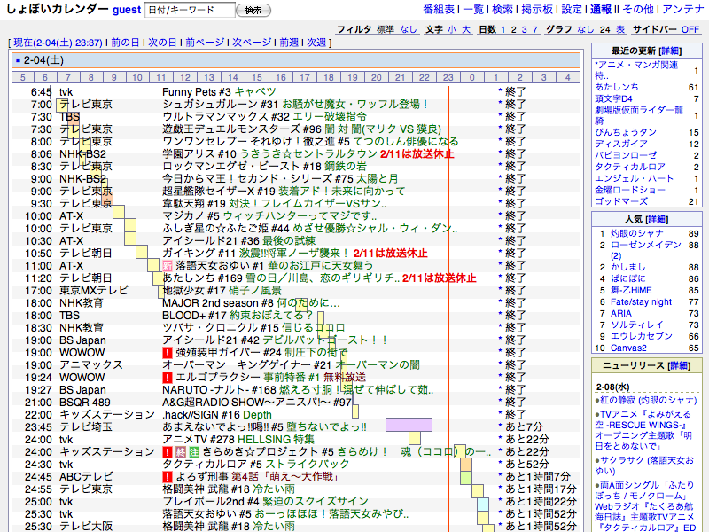
foltiaは「しょぼいカレンダー」というユーザ参加型アニメ番組表から取得した番組表をもとに、録画予約されている番組の放送予定をatキューに入れることで動作しています。
以下に詳しい流れをみていきます。
foltiaのセットアップが終わった状態で、foltiaのデータベースはしょぼいカレンダー由来の番組情報とXMLTV由来の番組情報をそれぞれ持っています。通常は番組IDと放送局を指定した自動予約を利用します。
番組の録画を予約するために、放映予定ページから番組IDである[TID]を選択します。
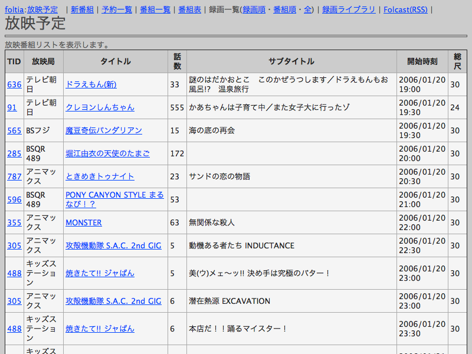
放映テレビ局とビットレートを選択する画面に移動するので内容を確認して予約ボタンを押します。番組の録画予約は番組ごとに一度するだけで全話自動で録画することが可能です。
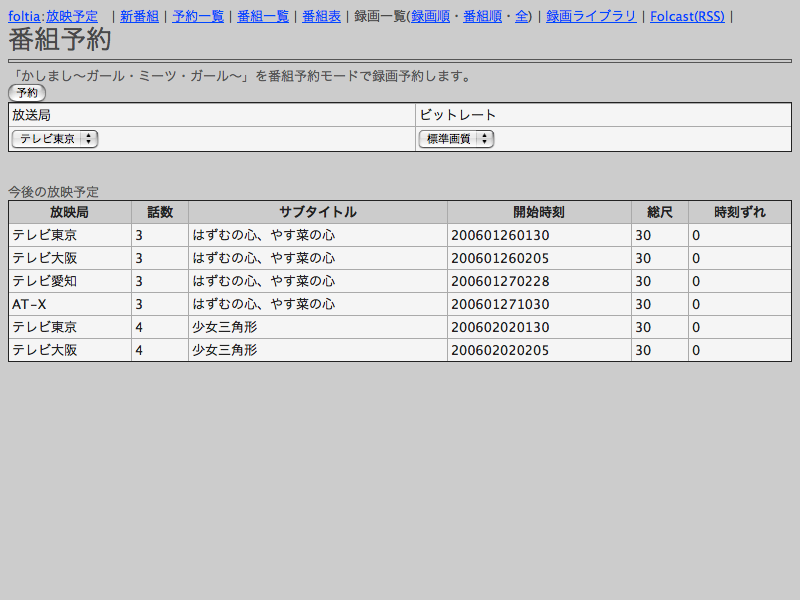
予約ボタンを押すとデータベースの録画予約テーブル[foltia_tvrecord]に番組IDと放送局、録画ビットレートが追加されます。その後、キュー入れプログラム[addatq.pl]を呼びます。addatq.plは番組IDと局IDを受け取り48時間以内の放映予定を探し、それぞれの放映ごとに録画準備のためのプログラム[folprep.pl]を放送予定時刻の5分前にキュー入れします。
予約番組の放送予定時刻の5分前になると、準備プログラム[folprep.pl]が実行されます。これは、最新の番組表データを再取得し、放映時刻が変更されてないか確認後、放送開始時刻の1分前に録画プログラム[recwrap.pl]が走るようにキューを入れます。放送時刻が15分以上先に延びていたら、再度放送予定時刻の5分前に準備プログラム[folprep.pl]をキュー入れします。
放送予定時刻の1分前になると録画の一連の流れを管理する録画プログラム[recwrap.pl]が起動します。このプログラムは、録画チャンネルが外部入力であれば外部チューナのチャンネルを適切なものに切り替えるためにリモコン送信プログラム[transfer.pl]を呼びだし、次に実際にビデオでバイスからファイルへの記録を行うキャプチャプログラム[tvrecording.pl]を呼び出します。
キャプチャプログラム[tvrecording.pl]はivtvドライバに付属のrecord-v4l2.plをベースに拡張したもので、搭載されている録画デバイスの空き状況を調べて、空いてる適切なデバイスを利用します。foltiaは特に指定をしない場合、同時録画する場合、地上波録画をキャプチャデバイスの若い番号から順番に、外部入力を一番大きいデバイスから順番に使用していきます。例としてキャプチャカードが4枚入っている場合、地上波録画は/dev/video0から、外部入力録画は/dev/video3から使われていきます。空きデバイスがない場合は、一番若い番号を持つビデオデバイスをつかんでるプロセスを止め、そのデバイスを利用します。録画は前後に10秒程度の余分な録画を行おうとするため、同一のチャネルで連続している番組を指定した場合であっても可能であれば2チューナ使用する形となります。tvrecording.plの録画チャンネルの引数に0を指定した場合はS入力が、-1を指定した場合はコンポジット入力が録画されます。外部入力はデフォルトで一番番号の大きいデバイスを利用します。録画が終了するとデータベースの放送情報テーブル[foltia_subtitle]に録画したMPEG2ファイル名を記録して親プロセスに戻ります
録画プログラムが終了すると、親プロセスのrecwrap.plはMPEG4への変換(トラコン)の必要があるか確認して、必要な場合変換スクリプト[vfr4psp.sh]か[ipodtranscode.pl]が呼び出されます。変換フォーマットや品質は設定ファイルであらかじめ設定しておきます。MPEG4ファイルは、MPEG2ファイル保存ディレクトリの下に番組ごとに整理されます。具体的には[TID].localized/mp4/の形を取ります。番組個別ディレクトリはMac
OS Xのローカライズ機構に準拠しているため、例えば665.localizedディレクトリはMac OS XのFinderでマウントすると「魔法少女リリカルなのはA's」と表示されます。
MPEG4への変換が終わるとpsp用MPEG4オプティマイザ[mp4psp]でタイトル入れとヘッダ組み立てをして最適化したあと、mplayerとImageMagickを利用してサムネールを作成します。サムネールはPSPの仕様に準拠して120x160で拡張子が.THMのjpegファイルです。そしてデータベースの放送情報テーブル[foltia_subtitle]に変換ファイル名を書き込んで録画の一連の流れが終了します。
図に示すとこうなります。
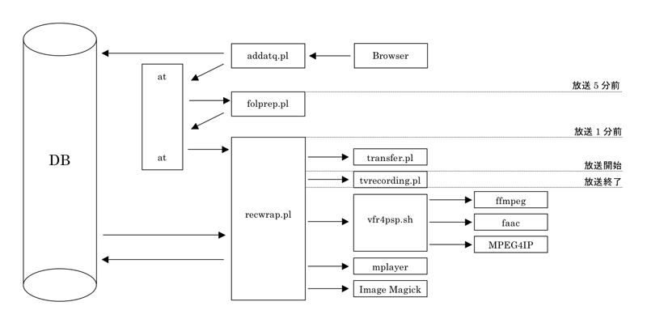
定期的な作業として、毎時間ごとに番組データ更新と録画キューの更新を行います。cronが一時間ごとに定時確認プログラム[schedulecheck.pl]を呼びだし、それが番組表の更新プログラム[getxml2db.pl]を呼びだしデータベースを更新したあと、予約されてる番組の数だけキュー入れプログラム[addatq.pl]を読み出します。
iPodへの自動シンク機能はiTunesの持つVideo Podcast機能を使うことで実現します。foltia Video Podcast-Folcastは、トラコンが終わった番組からXMLを組み立ててRSSを作ります。このRSSをiTunesに登録することでiPodへの自動シンク機能を実現します。
foltiaはデータベースに次のようなテーブルを作ります。
foltiaの動作にはLinux,Apache,PHP,Perl,PostgreSQLとビデオキャプチャ用ivtvドライバなどが必要です。
インストールはおおまかにOS,Apache,ivtvドライバ、PostgreSQL、foltiaの順で進めて行くとよいでしょう。
phpPgAdminやSambaなども必要に応じて入れておくと便利かもしれません。
foltiaのダウンロードは公式ページまたはSubversionで入手することが可能です。
Subversionを使う場合は下記のコマンドで最新versionを入手できます。
$svn co http://svn.dcc-jpl.com/foltia/trunk foltia
またインストールについては「foltiaインストールマニュアル」も参考になります。
あらかじめキャプチャカードを取り付け、に外部チューナを外部入力端子につないでおきます。
手もとの開発環境ではFedora Coreを使っています。一通りインストールを終えたらfoltiaを動作させるアカウント「foltia」を作ります。
Apacheは2.2以降が2GBを越えるファイルの転送にも対応していて便利です。
ポイントは、Apacheを動かすユーザをfoltiaにすることと、「.THM」のmime typeをimage/jpegにする設定を追加することです。
「FEDORA
CORE で GV-MVP/RX を使う」のrpmパッケージを使用すると早いです。
複数エンコーダを搭載している場合には/etc/modprobe.confに
options ivtv tuner=46,46
と、エンコーダの数だけ「46」を書き足します。
ビデオキャプチャデバイスが利用できるようになったら
chmod 0666 /dev/video*
でroot以外でも利用できるようにパーミッションを変更します。
ポイントは文字コードをEUC-JPでデータベースをつくることです。foltiaという名前でデータベースを作ったら、foltiaパッケージ付属のmktable.txtでテーブルを作成します。
以下のアプリケーションを利用します。インストールされてなければyumやaptなどからインストールして下さい。
mplayer:サムネール作成に利用
ImageMagick:サムネール作成に利用
以下のPerlモジュールを利用します。インストールされてなければCPANなどからインストールして下さい。
Time::HiRes
Schedule::At
DBD::Pg
Jcode
Device::SerialPort(Tira2を使う場合のオプション)
EPG番組表取得に必要なXMLTV日本語版をインストールします。ぱ研が制作したものがすでに本家にマージされているようです。
iPod H.264/AVCを作れる拡張をされたffmpegをインストールします。
1.ffmpegのソースを入手する
$svn checkout --revision {"2006-03-28 22:00"} svn://svn.mplayerhq.hu/ffmpeg/trunk ffmpeg
2.ここにあるiPodパッチをあてる
http://lists.mplayerhq.hu/pipermail/ffmpeg-devel/2006-March/009814.html
環境によっては更にx264.cのアップデートが必要という情報が寄せられた。(From foltia BBS TTTさん)
svn cat --revision 6711 ffmpeg/libavcodec/x264.c > ffmpeg/libavcodec/x264.c
3.メイクする$./configure --enable-mp3lame --enable-x264 --enable-gpl --enable-a52 --enable-xvid --enable-faac --enable-faad --enable-amr_nb --enable-amr_wb --enable-pthreads
installディリクトリの中にある「perl」と「php」をそれぞれ適当なところに配置します。
手もとの環境では/home/foltia/perl/と/home/foltia/php/に配置しています。
MPEG4のトラコンに利用しているツール「mp4psp」をインストールします。「ヘチマコンピュータ」によって作られたコードの「作業日誌と云う名の不定記 2005/01/23 」によるLinux版をベースにしたツールです。PSP用にタイトルを入力してATOMヘッダを組み立てて最適化するのに使用します。またファーストスタート形式にも最適化します。
Home Electronics社製USB 赤外線トランスミッタ Tira-2.1を利用することにより、外部チューナのコントロールを行うことが可能です。
「Tira-2.1 シリアルプロトコル(の意訳)」より、サンプルプログラムのcapture.plとtransfer.plをダウンロードしてfoltiaのperlディレクトリの下のirdaディレクトリに実行権限を付けてインストールして下さい。Tira2を接続して/dev/ttyUSB0が使える状態になったら、パーミッションを666に変更しておきます。
設定はperl設定php設定と録画局設定に大きく分かれています。
録画局設定は[foltia_station]テーブルで行います。
perl/foltia_conf1.pl.templateをコピーして設定ファイルを作ります。
$toolpath = '/home/foltia';
「perl」ディレクトリがあるパス。
$recunits = '4';
搭載エンコーダの数。GV-MVP/RX2Wを一枚刺しの場合は2になります。
$recfolderpath = '/home/foltia/php/tv';
録画ファイルを置くPATH
$uhfbandtype = 0;
UHF帯なら0、CATVなら1を指定します。それぞれivtvのntsc-bcast-jpとntsc-cable-jpに対応します。
$rapidfiledelete = 1;
1なら削除ファイルは「mita」ディレクトリに移動、0なら即時削除します。mitaディレクトリはゴミ箱のように機能しますが自動的に削除はしません。らくちんな運用をしたければ0、安全のため保存しておきたければ1でよいでしょう。
$tunerinputnum = 6;
$svideoinputnum = 7;
$comvideoinputnum = 8;
上記3行にキャプチャカードごとに固有な映像入力のパラメータを示すivtvのinput numperを指示します。それぞれ、チューナ入力、S映像入力、コンポジット入力を指定します。デフォルトはIO
DATA製 GV-MVP/RX,RX2,RX2Wカードで利用できる設定となっています。
カード固有の値を調べるにはivtvドライバをインストールした状態で
$/usr/bin/ivtvctl.paken --list-inputs --device=/dev/video0
などで可能です。
$haveirdaunit = 1;
Tira-2<http://www.home-electro.com/tira2.php>をつないでいるときに1,なければ0を指定します。
$mp4filenamestyle = 1 ;
古いPSPを利用している場合のみ1を指定します。通常1です。
0:PSP ファームウェアver.2.80より前と互換性を持つファイル名
1;よりわかりやすいファイル名
$trconqty = 2;
MPEG4変換の品質を指定します。デフォルトはH.264/AVCの中画質となっています。
3の高画質はファイルサイズは小さく画質もよいのですが処理時間がかかりすぎているのでデフォルトには指定していません。
手もとのCeleron2.6GHzのパソコンで、3の設定で実尺の3.4倍、2の設定で1.1倍、1の設定で0.77倍位の処理時間で完了しています。
0:PSP/iPod XviD MPEG4(旧式):faacとMPEG4IPを使って変換
1:iPod Xvid MPEG4 標準画質 15fps 300kbps
2:iPod H.264 中画質 24fps 300kbps
3:iPod H.264 高画質 30fps 300kbps
4:iPhone/iPod 480x320 H.264 高画質 24fps 350kbps
5:iPhone/iPod 480x320 H.264 高画質 30fps 350kbps
$phptoolpath = $toolpath ;
foltiaのphpディレクトリのパスを指定します。デフォルトではperlと同じ階層になります。
そのほか、データベース設定もありますが環境に応じて設定して下さい。
php/foltia_config2.php.templateをコピーして設定ファイルを作ります。
$toolpath = "/home/foltia" ;
「php」ディレクトリがあるパス。この場合/home/foltia/php/と設置されている状態になります。
$recfolderpath = '/home/foltia/php/tv';
録画ファイルの保存先のパス。
$httpmediamappath = '/tv';
ブラウザから見える録画ファイルのある位置。この場合http://localhost/tv/を表します。
$recunits = '4';
foltia_conf1.plと同じ搭載エンコーダの数。GV-MVP/RX2Wを一枚刺しの場合は2になります。
$useenvironmentpolicy = 0 ;
環境ポリシーを使うかどうか。環境ポリシー機能については後述します。最初は利用しない状態で動作確認をすることをおすすめいたします。
$environmentpolicytoken = "";
環境ポリシーのパスワードに連結されるセキュリティコード。環境ポリシー機能については後述します
$perltoolpath = $toolpath ;
foltiaのperlディレクトリのパスを指定します。デフォルトではphpと同じ階層になります。
録画の重要な設定となる項目です。インストールが無事に終了してれば首都圏の放送局設定サンプルが入っていますのでそれを参考に設定して下さい。
foltia_stationテーブルのそれぞれの項目について説明します。
stationid:ユニークなID値です。
stationname:しょぼいカレンダーと共通の放送局名です。
stationrecch:周波数チャンネルです。外部入力の場合はS映像入力の場合に0、コンポジット入力の場合に-1を指定します。受信出来ない局には-10を指定します。新規に自動追加されると-10になります。
stationcallsignue:放送局略称を記入します。空白でも構いません。
stationuri:放送局公式URIを記入します。空白でも構いません。
tunertype:外部チューナコントロールコマンドを書き入れます。「Tira2準備」の項で詳しく述べます。空白でも構いません。
tunerch:外部チューナコントロールコマンドを書き入れます。「Tira2準備」の項で詳しく述べます。空白でも構いません。
device:放送局によって録画デバイスを固定するときに用います。たとえば、BS-2専用チューナを常に/dev/video2につないでいるような場合「/dev/video2」と指定します。通常は空白です。
ontvcode:XMLTVで用いる放送局識別コードを記入します。EPG番組表に表示される局は
1.
XMLTV初期設定で情報を取得していて
2.
foltia_epgにデータがインポートされていて
3.foltia_stationテーブルのontvcodeフィールドにfoltia_epgテーブルのontvchannelフィールドと同じ放送局識別名が記入されている
局になります。デフォルトで関東キー局とBS、BSデジタル局、CS局が設定されています。
USBトランスミッタであるTira2を動作させるために必要な準備を行います。
perl/irda/にインストールされたcapture.plを利用して、チューナリモコンからボタンを学習させていきます。foltiaではひとつのキー表現するファイル名に「一文字.dat」というルールを使用しています。手もとのデジタルチューナをコントロールするのに必要だったキーは0-9の数字と地上デジタル切り替え、BSデジタル切り替え、CATV切り替え、放送局番号入力キーの14キーでした。それぞれのキーに対応するリモコンデータファイル名を0.dat-9.dat,u.dat,b.dat,c.dat,X.datとしました。これらをcapture.plと同じ階層に置きます。
完了したらチューナコントロールが行えるか動作確認をします。
./transfer.pl 0.datと実行することでリモコンで0キーを押した状態を再現します。
全てのキーがうまく動作したら、データベースのfoltia_stationテーブルのtunertypeフィールドとtunerchフィールドにチャンネルコマンドを記入します。手もとのチューナではBSデジタル103chのNHK
BS-hiに切り替える場合、BSデジタル切り替え、チャンネル番号入力、1,0,3と5つのキーを押します。これを再現するにはb.dat,X.dat,1.dat,0.dat,3.datの5つのファイルを送出することになります。これをデータベースに書くと「bX103」となります。tunertypeフィールドとtunerchフィールドは連結されて実行されますので「b」「X103」と書いても「bX103」「」と書いても等価なものとして扱われます。わかりやすい記入方法で書き込んでください。
ここまで設定できたらあと一息で完了します。まず単純な録画ができるか動作確認していきましょう。
最初に
$head /dev/video0
などでキャプチャでバイスからMPEG2データか取れるか確認します。なにか出てくればOKですので次に進みます。
つぎに、録画試験を~/perl/tvrecording.plを使って行います。
$./tvrecording.pl 1 60 0 test.m2p 5 0 0 /dev/video0
としてみましょう。この例は1chを60秒5Mbpsでtest.m2pというファイル名で/dev/video0から録画することを意味しています。2分程度でプロンプトに戻ります。録画ファイル保存フォルダ(デフォルトだと/home/foltia/tv/)にtest.m2pが出来ていて、ファイルを再生して期待通りならば第1段階成功です。うまくいかなかった場合には~/debug.txtに書かれる情報も参考にして原因を突き止めて下さい。
つぎに、しょぼいカレンダーから番組データをインポートできるかを確認します。
$./perl/getxml2db.pl
成功するとデータベースのfoltia_programテーブルとfoltia_subtitleテーブルにデータが入ります。
ここまでできたらWebブラウザでインストールしたphpのディレクトリを開いてみましょう。
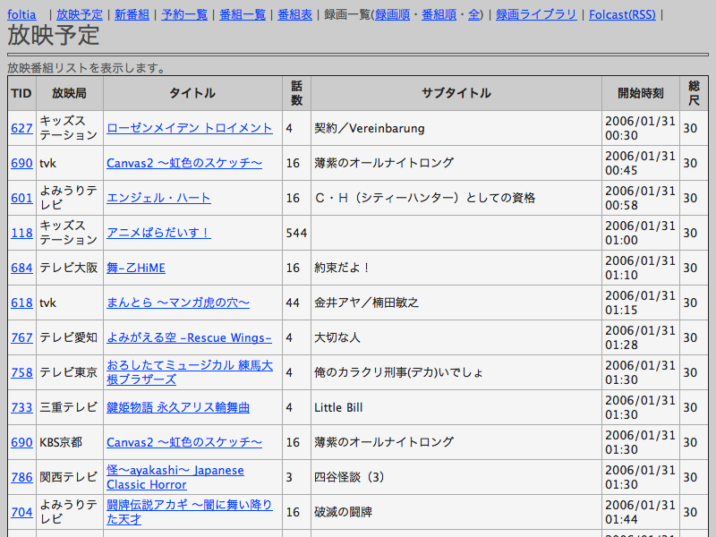
番組表が表示されているのが確認できます。実際に予約をして見ましょう。一番左のTIDの数字をクリックするとそのタイトルの予約画面になります。例では690のCanvas2
〜虹色のスケッチ〜をクリックした画面です。
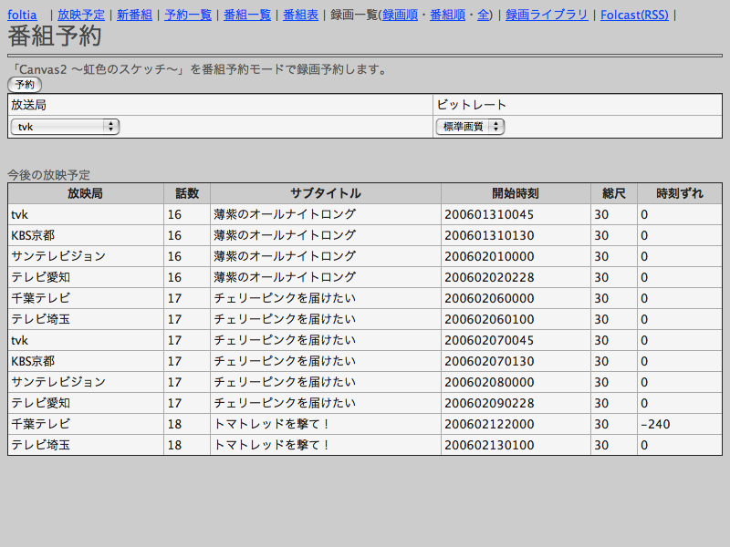
放送局とビットレートを選択して予約を押すと予約キューが入ります。放送局の設定で[全局]を選択すると文字通り放送スケジュールが入ってる局を全局録画しようとします。いまのところ受信可能不可能に関係なく録画します。想定してる用途は『千葉テレビとテレビ埼玉とtvkでリリカルなのはA'sを録画しておこう!』というものではなくしょぼいカレンダーが持つ*声優関連*や*アニメ特番*などの放送局が特定できない番組グループを録画するためのものです。
予約が完了したらシェルでatqコマンドでキューが入ったを確認します。
$atq
182194 2006-01-31 00:40 a foltia
放映予定の5分前に起動するプロセスが入ってることが確認できます。
この例だと00:40にfolprep.plが起動します。
folprep.plが起動すると放映予定1分前にrecwrap.plがキューに入ります。
$atq
182195 2006-01-31 00:44 a foltia
番組が終了したらMPEG2が録画されたか確認してみましょう。デフォルトで~/php/tv/690-16-20060131-0045.m2pというファイルが出来ているはずです。ファイル名はそれぞれ以下のルールで命名されます。
TID:しょぼいカレンダーと共通の番組IDです。
話数:番組が第何話かを示します。該当しない場合は空白になります。
放映日:YYYYmmddスタイルの放映日です。
放映時刻:0000-2359の間での開始時刻になります。しょぼいカレンダーでは24:00以降の時刻を扱いますがfoltiaでは暦通り24:00以降の時刻は次の日として取り扱います。
MPEG2の録画が完了するとfoltiaはffmpegを利用してH.264/AVCへの変換を開始します。所要時間はCeleron2.6GHz環境で実尺の1.2倍程度の時間です。この例の場合~/php/tv/690.localized/mp4/MAQ-690-16-20060131-0045.MP4という動画ファイルと同じ階層にMAQ-690-16-20060131-0045.THMファイルができ上がります。ファイル名は、先頭がM4Vの場合MPEG4(XviD)、MAQの場合H.264/AVC、そのあとに続くのはMPEG2と同じルールです。
番組指定による自動録画が動いたら、つぎにEPGによる個別番組録画の動作確認に移りましょう。
まず番組データをXMLTVを用いてインポートします。
$/usr/bin/perl /usr/bin/tv_grab_jp | /home/foltia/perl/xmltv2foltia.pl
確認のためにブラウザで番組表ページを開きます。
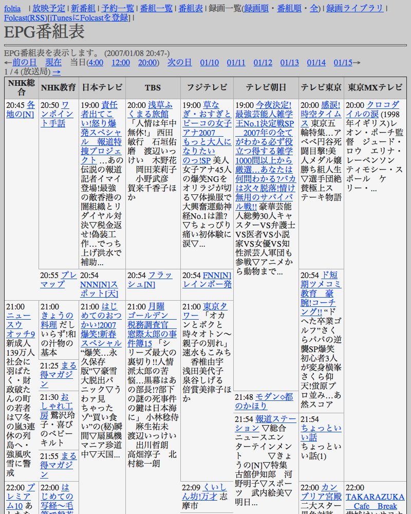
テレビ東京のワールドビジネスサテライトを予約してみます。
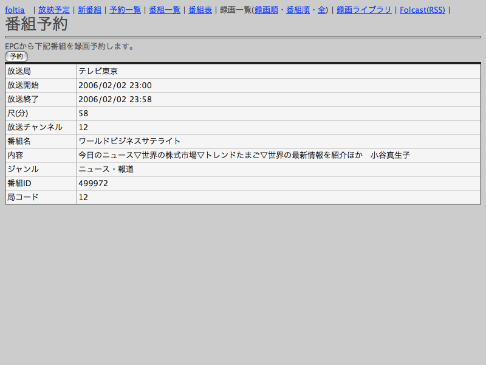
EPG予約はTIDが0番の番組として扱われます。ファイル名や録画フォルダもそれに準拠します。
放送が終わったらMPEG2とMPEG4を確認してみましょう。
ここまで動作確認ができればfoltiaの基本的な部分は動作しています。残念ながらうまく動かない場合には~/debug.txtをみながら原因を分析してみて下さい。
最後の仕上げにcronの設定をしておきましょう。私は以下の様な設定にしています。
7 * * * * /home/foltia/perl/schedulecheck.pl >/dev/null 2>&1
1 0 * * * /home/foltia/perl/cron_foltia_dayly.sh >/dev/null 2>&1
schedulecheck.plは番組データを更新してキューを再構築するプログラムです。起動頻度はもっと低くても問題ないかもしれません。
cron_foltia_dayly.sh はXMLTVを呼び出してEPG番組表データを取得するなどの処理を行います。
また、ivtvのバージョンによっては再起動すると/dev/video*のパーミッションがrootでしか読めなくなってしまう場合があります。その場合にはユーザfoltiaでデバイスが読み出せるよう適切なパーミッションを設定し直して下さい。
# vi /etc/security/console.perms.d/video.perms
<console> 0666 <sound> 0666 root.foltia
<console> 0666 <v4l> 0666 root.foltia
# pam_console_apply
foltiaの操作はWeb画面で行います。以下に各メニューの説明をします。
公式ページ<http://www.dcc-jpl.com/soft/foltia/>にジャンプします。
しょぼいカレンダーより取得した放送予定の全リストを表示します。通常のトップページです。録画予約されているものが色違いで強調表示されます。
赤色表示:その放映が録画対象であることを示します
青色表示:録画対象になっている番組の他局放映ことを示します。録画はされません。
[TID]をクリックすると番組予約画面へ、[タイトル]をクリックすると「しょぼいカレンダー」の該当番組詳細画面へ、「サブタイトル」をクリックすると「しょぼいカレンダー」の放映予定画面へそれぞれ移動します。
デモ画面:http://www.dcc-jpl.com/soft/foltia/demo/
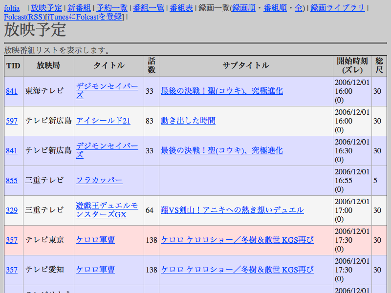
放映予定の中から第1話のものを抽出します。新番組シーズンに予約を入れるとき便利です。
デモ画面:http://www.dcc-jpl.com/soft/foltia/demo/index.php?mode=new
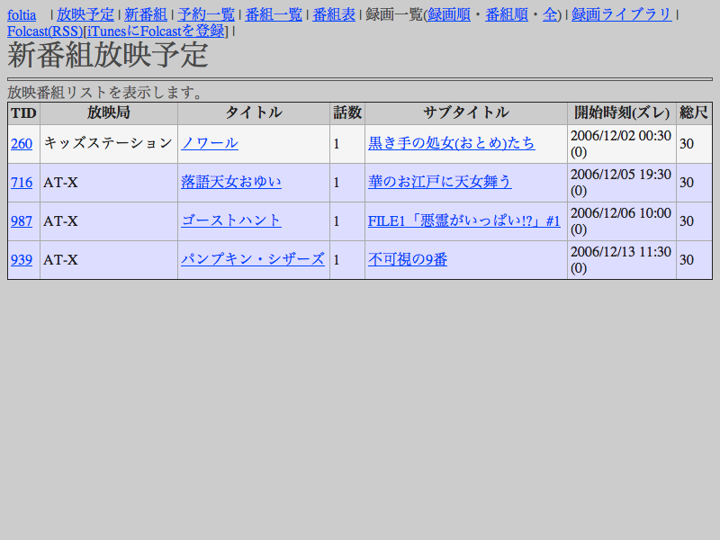
大きく上下のふたつのエリアに分かれていて、予約されている番組の放映予定と番組名を一覧表示します。ここでも[TID]をクリックすると番組予約画面へ、[タイトル]をクリックすると「しょぼいカレンダー」の該当番組詳細画面へそれぞれ移動します。録画予約の解除は下半分のタイトルリストの項目から行います。EPG予約の解除もここから行います。「画質」項目は録画ビットレートをMbps単位で表示しています。
色が付いている番組は重複警告です。搭載された録画ユニットで録画し切れない場合に色がつきます。赤色はカードに搭載されたアナログチューナーの重複、青色は外部入力の重複を示します。重複警告がでている番組は録画が欠ける可能性があります。また、アナログチューナー、外部チューナーともに00:00-00:30 番組A ,00:30-01:00 番組Bという番組が連続している場合は重複とは判断しません。
引数rでエンコーダ数を変更して予約状況を調べる事が出来ます。listreserve.php?r=6で6台エンコーダを搭載したときの予約状況を調べる事が出来ます。
デモ画面:http://www.dcc-jpl.com/soft/foltia/demo/listreserve.php
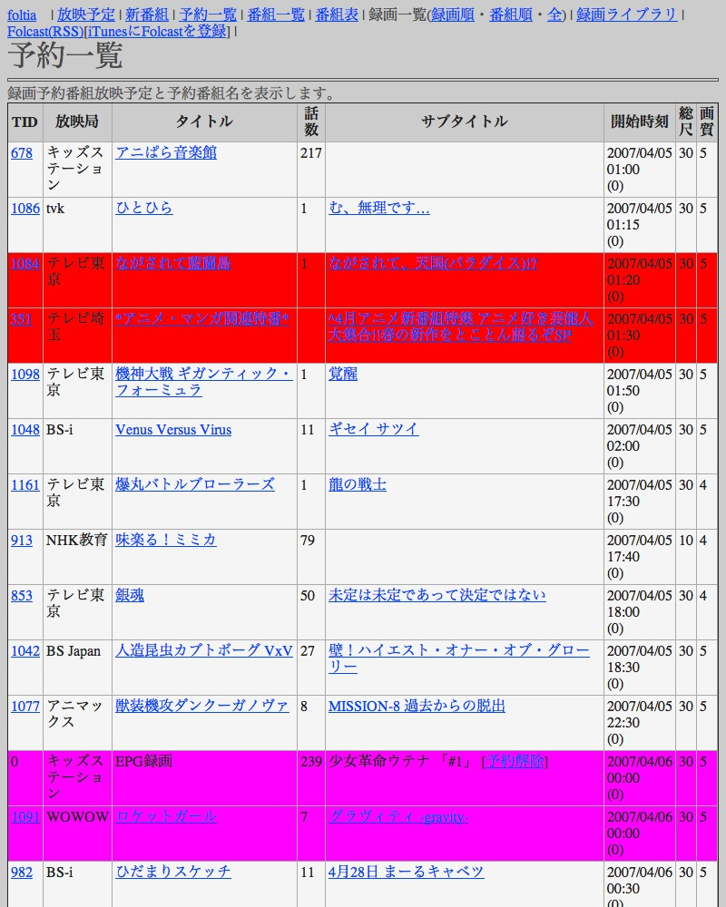
|中略
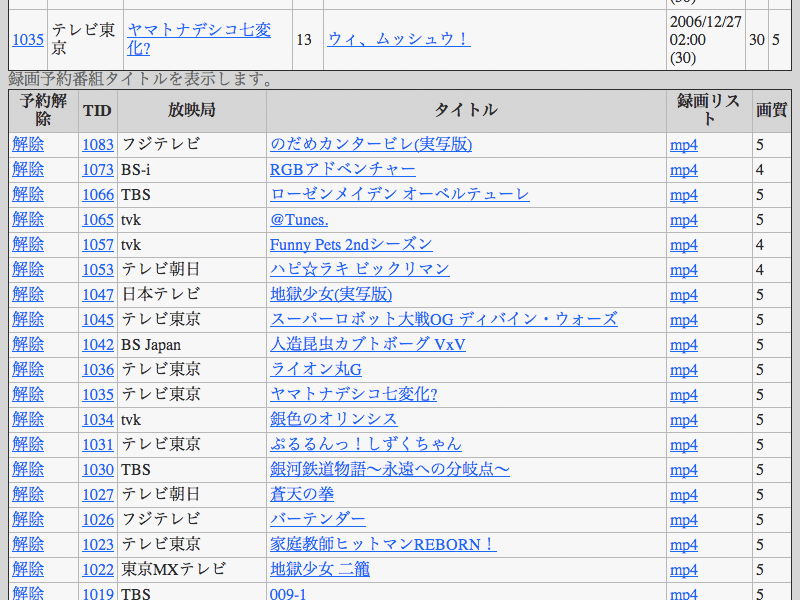
foltiaの内部データベースに登録されている全番組リストを表示します。MPEG4リンク項目は[録画ライブラリ]メニューと同じ詳細ページにジャンプします。
デモ画面:http://www.dcc-jpl.com/soft/foltia/demo/titlelist.php
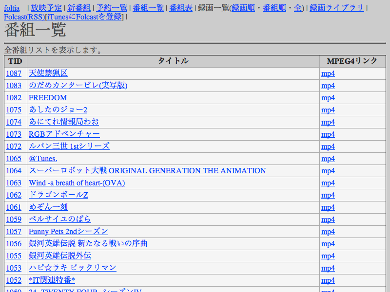
EPG録画向け個別番組表を表示します。デフォルトで現在放映中の番組が最上段に表示されて、8時間分、8局表示します。
既存の番組表サイトと比較して、常に現在放映されているものが最上段に表示されるため、常用に際しても便利です。
タイトルをクリックすると放映時刻と放映局を選択しての録画予約ページとなります
自動録画に対応していない番組を録画するときに役に立つでしょう。ここで予約したものはTIDが0番の放送予定としてデータベースに追加されます。
デモ画面:http://www.dcc-jpl.com/soft/foltia/demo/viewepg.php
個別の手動録画を行います。
・EPGでまだ降ってきていない番組
・ケータイで外から大急ぎで予約したい場合
などの用途を想定しています。テンキーから迅速に予約出来るようにあえてプルダウンメニューでなく数字入力式としています。foltiaの仕組み的に番組の尺の最大値は特に制限はないのですが取り回しを考えて最大6時間に区切ってあります。録画したい番組が360分を超える場合には適当に分割して予約してください。

録画済みのMPEG2ファイルを放映順に一覧表示します。削除チェックボックスにチェックを入れて削除ボタンを押すとそのファイルは削除されます。上部にディスク空き容量とトラコンプロセスを表示します。
ディスクの空き容量が少なくなると背景色が100GB,50GB,30GBでそれぞれ変化し注意を喚起します。
デモ画面:http://www.dcc-jpl.com/soft/foltia/demo/showplaylist.php
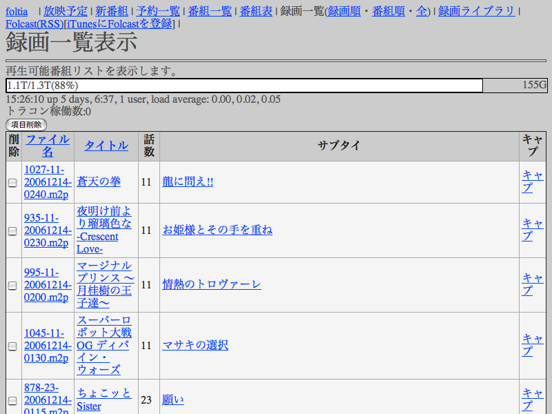
録画済みのMPEG2ファイルを番組ID[TID]順に一覧表示します。
デモ画面:http://www.dcc-jpl.com/soft/foltia/demo/showplaylist.php?list=title
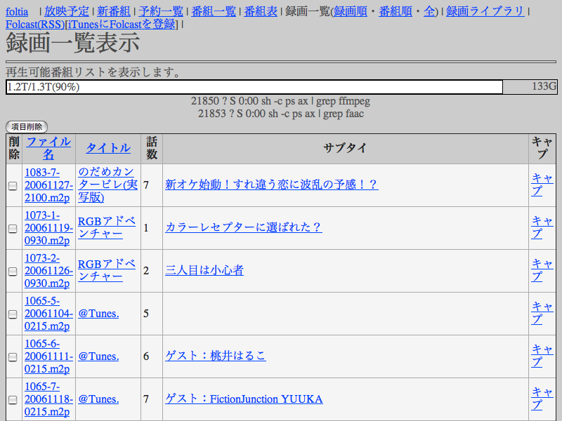
データベースを使わず、録画ディレクトリの中にあるファイルを一覧表示するモードです。主にメンテナンス用途として使います。
MPEG4録画ファイルを番組ごとに一覧表示します。
デモ画面:http://www.dcc-jpl.com/soft/foltia/demo/showlib.php
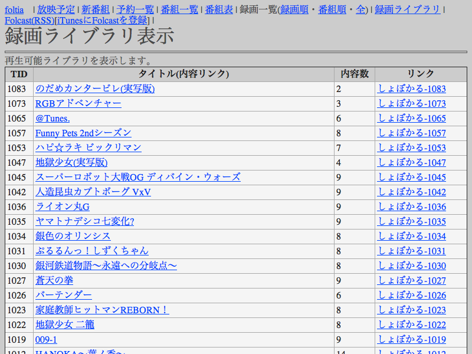
詳細をクリックすると番組ごとの一覧になります。詳細表示の画面では、ブラウザでMPEG4を再生する事も可能です。番組単体のPodcast用RSSもこの画面内にあります。
MP4ファイル名をクリックするとブラウザ内で再生を開始します。その右のアイコンは、QuickTimePlayerでムービーを再生します。
デモ画面:http://www.dcc-jpl.com/soft/foltia/demo/showlibc.php?tid=665
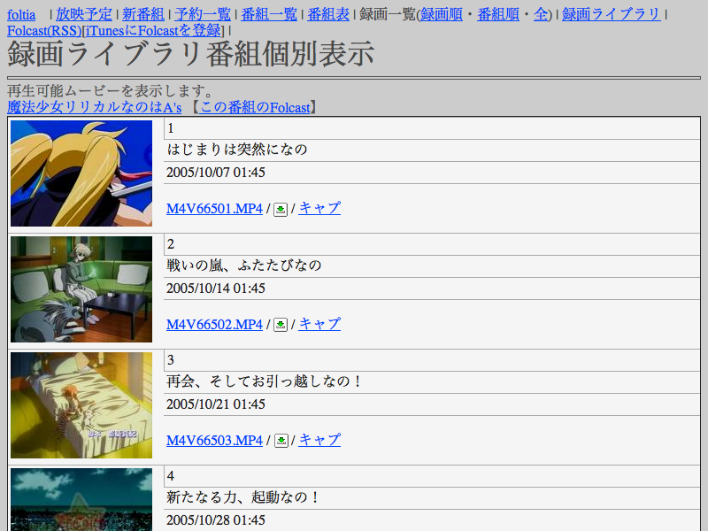
「キャプ」でキャプチャ画面一覧を開きます。
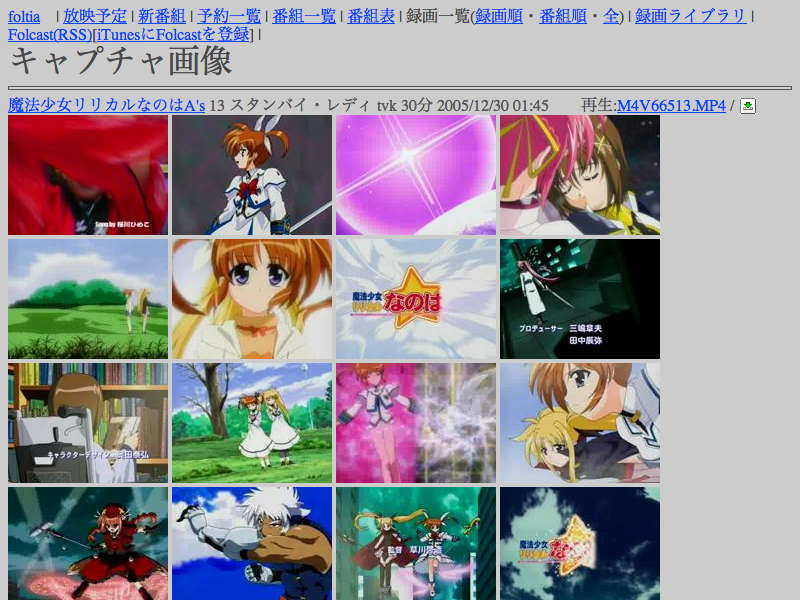
foltiaではチェンジセット70にて環境ポリシーと呼ばれる機能が追加されました。以下では環境ポリシー機能について説明いたします。
foltia_config2.phpで次の設定を変更します。
$useenvironmentpolicy = 0 ;
環境ポリシーを使うかどうか。0が未使用(デフォルト)、1が使用です。
$environmentpolicytoken = "";
環境ポリシーのパスワードに連結されるセキュリティコード。セキュリティコードとは各ユーザがログインするために自分のアカウントのパスワード以外に知らなければいけないフレーズです。デフォルトは空白です。空白でも差し支えありません。
$perltoolpath = $toolpath ;
foltiaのperlディレクトリのパスを指定します。デフォルトではphpと同じ階層になります。
つぎに.htpasswdファイルを作成します。デフォルトではperlディレクトリと同じ階層に設置されます。もし既に.htpasswdがあるならば必要に応じてバックアップを取っておいて下さい。ファイルの作成はperl/envpolicyupdate.plを実行することで自動的に作成されます。
環境ポリシーが有効になると、アクセス時にブラウザによって認証画面が出るようになります。ID:foltia
PW:foltiapasswd)が初期管理者パスワードです。 ページが表示されるとメニューの右端にアカウントが出るようになります。
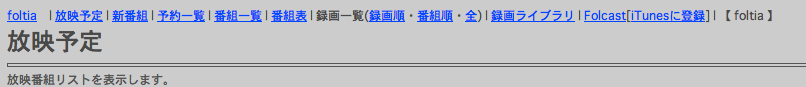
ログイン時に認証されなかった場合下記の画面になります。
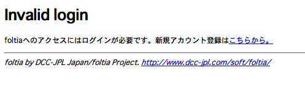
ここで「こちらから。」につながってるリンクをたどるとaccountregist.phpに移動して次のような画面となります。
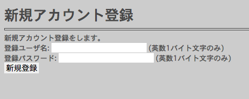
ここでアカウントを追加すると即時に有効になります。
設定でセキュリティコードを空白のデフォルトにしておいた場合、ここで登録されたパスワードでログイン出来ます。セキュリティコードを設定した場合パスワードとセキュリティコードをつないだ文字列でログイン可能となります。具体的にはこんな感じです。
・アカウントのパスワード[fate]、セキュリティコード、空白の場合、ログインパスワード:[fate]
・アカウントのパスワード[fate]、セキュリティコード、[nanoha]の場合、ログインパスワード:[fatenanoha]
特権管理者はセキュリティコードのいかんにかかわらず常にアカウントのパスワードでログイン出来ます。
管理者はEPG録画の予約者確認と、予約削除が可能です。
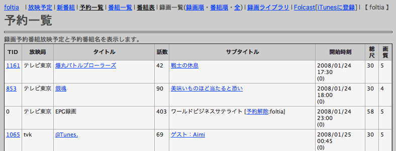
今後ユーザごとにFolcastを編集出来る機能などを開発予定です。
以上、駆け足でfoltiaの概要を説明してきました。今のところfoltiaには視聴に関する機能は一切ありませんが、使用例として自宅では富士通T90Hというパソコンにfoltia録画ボリュームをSambaでマウントし、WinDVDでMPEG2を再生、外ではiPod
VideoでMPEG4を視聴しています。DVD Playerソフトでファイルを選んで再生するのがいまひとつめんどくさい操作なので、今後の改良点としたいところです。
foltiaはまだまだ開発途上のソフトウェアです。今後の計画は以下の様なものを考えています。
・未読番組管理機能
・ロケーションフリーテレビのようなライブストリーミング機能
・デジタル放送のデジタル録画機能
詳しくはfoltia Development Central wiki:「foltia のToDoやらゆめを適当に書くwiki」に。
今後も全ての情報はDCC-JPL Japanの公式ページ<http://www.dcc-jpl.com/soft/foltia/>に掲載していきます。
・謝辞
以下の数々のサイトを利用、参考にさせていただいております。改めましてお礼申し上げます。
しょぼいカレンダー<http://cal.syoboi.jp/>
AAF ぱ研<http://www.paken.org/>
Tira-2.1 シリアルプロトコル(の意訳)<http://www.geocities.jp/coffee_style/Tira-2-0.html>
「月琴日記」<http://www.kokone.to/~kgt/diary.html>
Linuxで最強のテレビ録画サーバを目指す<http://www.tadachi-net.com/desktop_pc/asus_terminator/avserver3.html>
Fedoraで自宅サーバー構築 <http://fedorasrv.com/>
ONTV JAPAN<http://www.ontvjapan.com/>
IRC #dameTunesのみなさま
他多数
本ドキュメントはオープンソースマガジン2006年6月号(ソフトバンククリエイティブ刊)向け原稿として書き起こした稿をもとに加筆したものです。公開を快く許諾して下さいましたソフトバンククリエイティブ様にお礼申し上げます。
本ソフトウェアは完全な無保証です。ライセンスとしてGPL2を適用したいと考えていますが適用出来るかどうかの判断がまだ終わっていない段階です。
{kind=link}